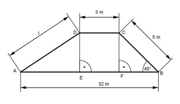

Pythagoras Aufgabe 73 Ein Damm hat den dargestellten Querschnitt. Berechnen Sie die Länge l der Böschung in m.

Der Winkel bei C = 180° - 90° - 45° = 45° --> Das Dreieck FBC ist gleichschenklig --> FC = FB = h Satz von Pythagoras im Dreieck FBC: BC2 = h2 + h2 52 = 2h2 2h2 = 25 |:2 h2 = 12,5 m2 |√ h = 3,5 m Satz von Pythagoras im Dreieck AED: AE = AB + FD – EF = 32 m – 3,5 m – 3 m = 25,5 m AD2 = l2 = AE2 + ED2 l2 = 25,52 m2 + 3,52 m2 = 662,5 m2 |√ l = 25,7 m